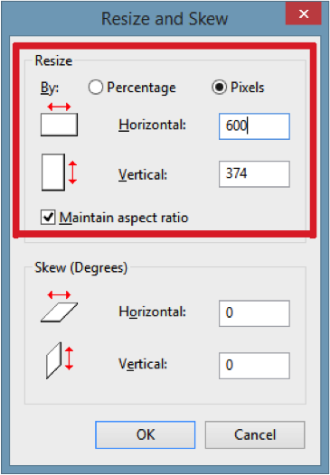
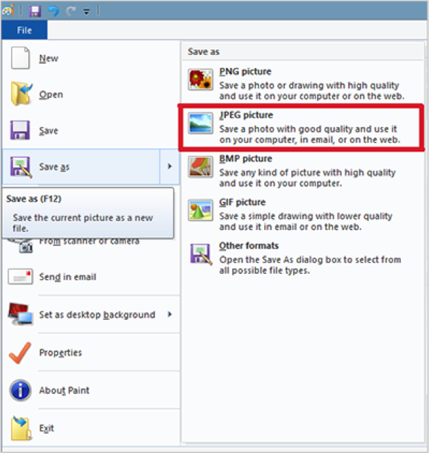
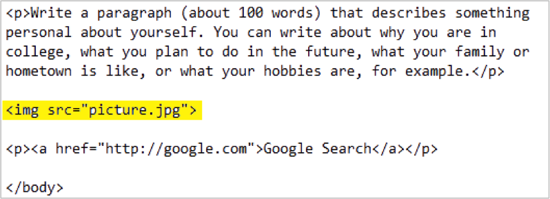
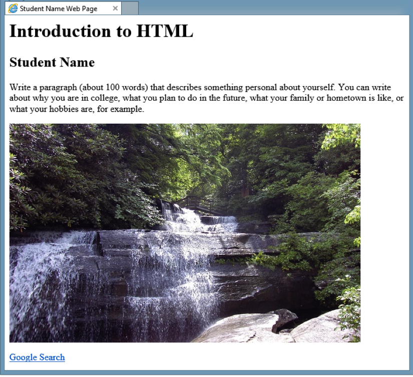

Introduction to HTML
Part 3: Adding a picture to the page
As you may remember from your readings for this week, the World Wide Web was invented around 1990, primarily as a way of linking research papers to each other. Back then, Internet connections were relatively slow by our standards, and HTML was designed to be a text-only platform that could be transferred quickly from one computer to the next, even with a slow connection. In fact, an HTML file can only contain text--it is not possible to embed a picture or sound file into the HTML file itself.
In order to include media like pictures and videos in a Web page, the web developer has to make that content available as separate files on the Web server. The HTML page itself includes code that tells the browser where to find the media file, as well as where the content should appear on the page. In some ways, this is similar to adding a hyperlink, except that the user can see the content embedded in the page, instead of having to click a link to see the content..
For this part of the assignment, you are asked to add a picture of your choice to the page.
- Find a picture file to use for this assignment, and put a copy of the file in the YourNameHTML folder. You may use a picture of yourself, a child, a pet, or any other subject, but it must be a picture that you have the right to use--either because you took the picture personally or the person who took the picture has given you permission to use it. Also make sure that it is appropriate for public distribution (no nudity or violence!).
- You will need to make sure that the picture file is in JPEG format, that it is small enough to fit in the browser window, and that it has the filename picture. Use the following steps to make these changes.
- Open Windows Paint through the Start menu, then use File/Open in Paint to open your picture file. Double-clicking the file will not automatically open the file in Paint.
- Resize the image so that it is no more than 600 pixels wide. You can do this by clicking the Resize button in the Home ribbon, selecting the Pixels option, then keying a number that is 600 or less in the Horizontal box.

If your picture file is already less than 600 pixels wide, do not make any changes here. Just click the Cancel button to close the Resize and Skew dialog box. Otherwise, click OK to apply the change to your picture. You will see the picture resize in the Paint window if you made changes.
- To save the file as picture.jpg, click the File tab, point to Save As, then click JPEG Picture in the submenu:

- Make sure that the file is being saved to the YourNameHTML folder created for this assignment. Enter the filename picture in the Save As dialog box that opens, then click OK.
- Close Paint and return to the YourNameHTML folder in the Computer window. Delete your original picture file, so that the folder contains only three files:
- introduction
- picture
- style
- In the HTML file in the Notepad window, choose a location for the picture. In the examples here, the picture is added above the hyperlink, but you could choose to add the picture in a different place if you wish. Note that the picture must be inside the <body> tags and that it should not be placed inside a paragraph of text.
- In the chosen location, add the code shown in the screen shot below:

- Save the Notepad file and refresh your browser window. If you added the code correctly, the picture should appear in the desired location on the page:

When you are happy with the page content and layout, move onto Part 4.